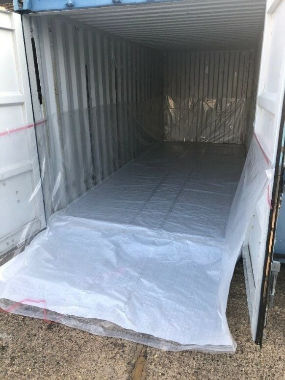

Quality & certifications
Certified, not just claimed
Every quality statement on this site is backed by an accreditation issued and audited by an independent body — not marketing language. Here's exactly what we hold and what it means for your order.
Our certifications
Four accreditations, one quality system
ISO 9001
Quality management systems, certified since 1989 — among the first UK converters in our category to achieve it. Audited annually.
ISO 14001
Environmental management system, awarded December 2019, covering waste, material sourcing and energy use across our facilities.
ISO 22000
Food safety management, covering food-grade production of flexitanks and dry bulk container liners.
PAS1008:2016
UK specification for flexitank design, manufacture and testing — every flexitank we make meets this standard.
What this means for your order
Certification you can act on, not just read
100% weld pressure-testing
Every flexitank end weld is pressure-tested to 1 bar before dispatch — not a sampled batch.
In-house raw material testing
Film and fabric batches are tested on arrival, before they enter production.
Annual re-audit
Our ISO accreditations are independently re-audited annually, not awarded once and forgotten.
Need certificates for your compliance team?
We can provide current certification documents on request for your procurement or QA records.